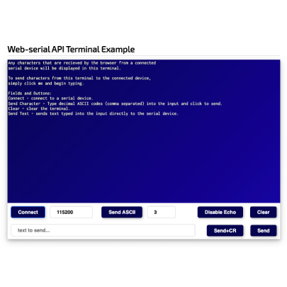
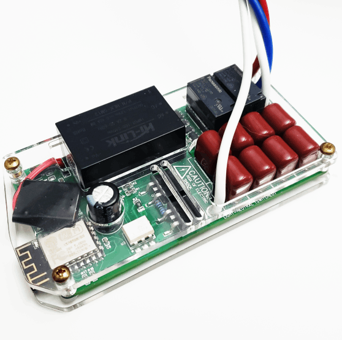
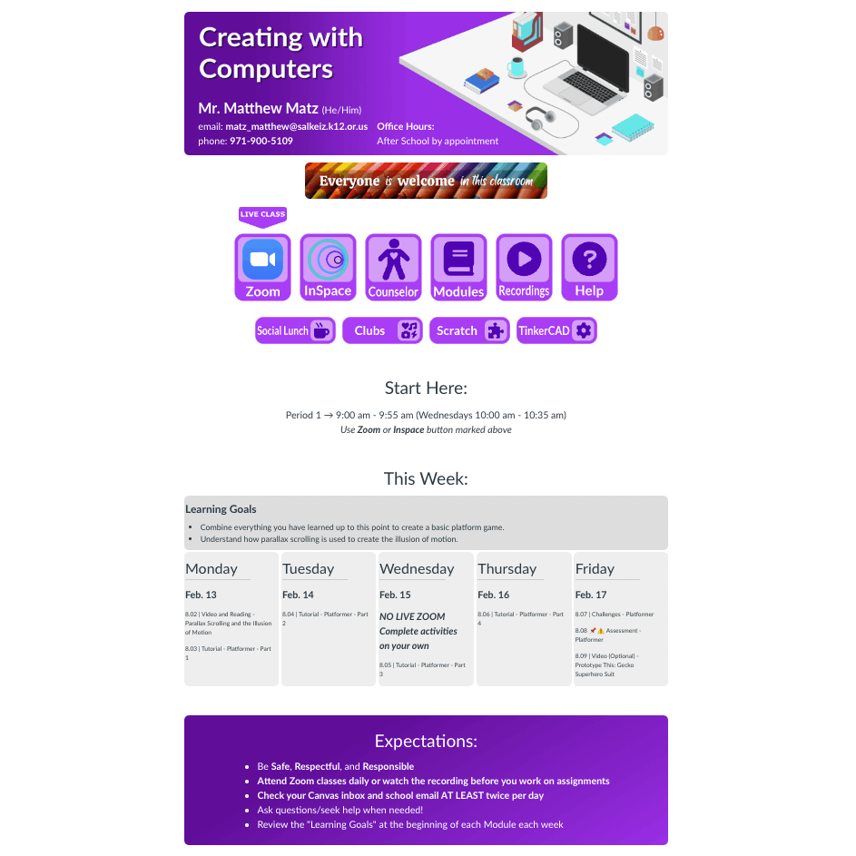

Matthew Matz
Product Engineer
Educator
I'm love to create, tinker, build, and repair all kinds of things. I specialize in developing educational technology, I'm an expert in school improvement, and I'm an excellent product engineer.
Projects & Portfolio
-
Exercise Machine User Interface
This project uses an ESP32 to host an web page with a timer, odometer, speedometer, heart rate monitor, track progress and selection, and pedal resistance in an intuitive interface.
-
Upcycled Retro Joystick
This quick little project was a great way to upcycle a thrift-store find.
-

Taboo for Three
A website you can use to make Taboo a three-player game.
-
Piper Make
An entire product line for middle school STEM/STEAM classrooms to learn electronics and coding.
-
Piper Computer Kit v4
The newest revision of the Piper Computer Kit from Piper Learning. Designed to be cost-eefective and keep or improve all of the features of the previous versions that made it an amazing STEM learning expereince.
-

µTerm
A lightweight JavaScript library that allows you to add a terminal into a website.
-
Garage Shelves
Plans for garage or storage shelving that's large, easy to build, and relatively inexpensive.
-
USB Host to UART Bridge Module
A simple way to connect a USB HID device like a keyboard or a mouse to nearly any microcontroller.
-

HomeAssistant Fan and Light Controller
A ESP8266- and ATTINY-based module that can be used with HomeAssistant to control a ceiling fan and lighting.
-
Question Sets
Virtual labs and online practice problems for middle and high school physical science and computer science.
-

Earth-Moon System Simulator
A virtual lab simulation for helping students understand seasons, climate, eclipses, and lunar phases.
-

Canvas Home Page Template
A home page template for the Canvas LMS that makes it easy for students to navigate their online classes.
Resumé
Education:
Post-Master's: Professional Administrative Licensure
Lewis and Clark University
Portland, OR (2010 - 2013)
- Culturally responsive leadership and community engagement.
- Human resource investigation, due process, and management.
- District budgeting, compliance, and contract negotiation.
Master of Education: School Leadership
Post-Master's: Initial Administrative Licensure
University of Portland
Portland, OR (7/07)
- Researched the effect of student groupings on learning.
- Program, curriculum, and intervention design and implementation.
- Leadership of school-wide initiatives.
- School finance, school law, and student civil rights.
Bachelor of Arts: Physics and Chemistry Education
Concordia College
Moorhead, MN (12/01)
- Student manager responsible for providing sound services for campus events.
- Faculty Scholarship recipient.
- Studied schools and education systems abroad in Northern Europe.
Professional Experience:
Product Designer, Lead Software and Hardware Engineer
Piper Learning Inc.
San Francisco, CA (8/19 - Present)
- Successfully redesigned the entire product catalog for the company, resulting in improved sales and customer satisfaction.
- Demonstrated strong problem-solving skills by redesigning the company's flagship product to reduce manufacturing costs while improving functionality and maintaining its original appearance.
- Created a new product line, Piper Make, based on Raspberry Pi microcontrollers, which generated a reliable revenue stream during the pandemic. Developed a starter kit and 10 add-on kits with ongoing development.
- Pioneered the development of a novel method for programming a microcontroller via a Chromium-based browser, enabling the product to be used without the need for drivers or software installers.
- Created cost-effective and easily sourceable replacements for impossible-to-source sensor modules using ATTINY MCUs and discrete components, allowing for continued production during the pandemic.
- Developed custom PCBA modules and sensors that seamlessly integrated with the Piper Make product line, enhancing the user experience.
- Single-handedly designed and coded over 90% of the Piper Make website/UI, including low-level serial communication APIs and student-facing tutorials.
- Managed PCBA design, ordering, programming, and testing, ensuring smooth production and delivery of high-quality products.
- Designed and built a highly efficient robot to program and test full panels of sensor modules, increasing productivity to approximately 2000 modules in a single day.
Engineering, Computer Science, and Science Teacher
EDGE Middle School
Salem, OR (8/20 - Present)
Computer Science and Physical Science Teacher
McKay High School
Salem, OR (8/18 - 6/20)
- Collaborated with fellow teachers and school leadership to successfully transition to fully online instruction at the start of the COVID pandemic. Adapted to a large number of new software services, procedures, and instructional methods in a short amount of time.
- Contributed as a member of the teacher leadership team to create and build a fully-online program from the ground up, which has quickly become one of the most successful online programs in the state of Oregon.
- Demonstrated resourcefulness by developing a range of web-based tools, including virtual science labs and attendance tracking software, to improve student learning, staff operations, and efficient use of staff preparation time.
- Helped fellow teachers improve their Canvas LMS pages and modules to enhance the ease of access and navigation for students and families.
- Successfully implemented a computer science program within the Engineering Program of Study in partnership with Microsoft TEALS.
- Collaborated with the 9th grade science team to enhance the quality of formative and summative assessments.
- Prioritized inclusive practices and ensured a safe and comfortable learning environment, particularly for at-risk and differently-abled students, fostering a supportive and welcoming classroom community.
Education Coordinator & Software Developer
Parallax Inc.
Rocklin, CA (7/15 - 9/18)
- Facilitated training sessions for educators on Parallax robotics and electronics platforms, improving their ability to incorporate these resources in their classroom instruction.
- Collaborated with state and county-level decision-makers on STEM curriculum development efforts, contributing valuable insights to advance STEM education in the region.
- Designed and developed the front-end HTML/CSS/JavaScript/Node.js for the BlocklyProp graphical programming language (solo.parallax.com), enhancing the user experience for learners using this platform.
- Designed and reviewed circuits for student projects, prioritizing repeatability, robustness, and safety to ensure high-quality outcomes.
- Developed hardware and mechanical components, such as sensor platforms, propeller guards, and product demo cases, as well as servo-based actuators for STEM kits.
- Developed and maintained C-language libraries for various sensors and modules, improving the functionality and accessibility of these tools for learners.
- Authored tutorials, reference documentation, and product guides for STEM products and projects, collaborating with guest authors to provide comprehensive resources for educators and students.
Principal
Sam Boardman Elementary
Boardman, OR (8/13 - 7/15)
Assistant Principal
Irrigon Jr./Sr. High
Irrigon, OR (8/08 - 8/13)
- Spearheaded a school-wide intervention program in reading and math that contributed to reversing a 5-year decline in statewide assessment scores, demonstrating your effectiveness in improving student performance.
- Successfully managed Title I and Title III grants, surpassing prior year's objectives and ensuring that the school met the needs of its diverse student population.
- Fostered a welcoming climate for students, parents, and staff, establishing a positive culture for the entire school community.
- Developed and implemented software and data-based decision making strategies to effectively manage student behavior and discipline, resulting in a reduction in problem behaviors.
- Successfully managed a $30,000/year GEAR-UP grant, bringing valuable technology, field-trips, and opportunities to our school, promoting a college-going culture among all students.
- Eliminated math classes that tracked students below grade-level, promoting a more equitable and inclusive learning environment for all students.
- Designed master schedules that minimized conflicts and enabled diverse learning opportunities for students, demonstrating your ability to balance different priorities and optimize resources effectively.
Physical Science Teacher
Fremont Middle
Roseburg, OR (8/03 - 6/08)
Physics Teacher
Mazama High
Klamath Falls, OR (9/02 - 6/03)
- Successfully led my teaching team in implementing the Step Up to Writing Program beyond the Langauge Arts curriculum, resulting in significant improvement in students' writing skills and overall academic performance.
- Facilitated the development of a comprehensive district-wide literacy program, which was later adopted as a model for other schools in the region. This initiative contributed to our school being recognized as an Oregon Model School.
- Delivered effective math and study skills curricula to students who were identified as being at high risk for dropping out. My program helped these students to significantly improve their academic performance and gain confidence in their abilities to succeed in school.
Contact
Social Media
-
LinkedIn
-
GitHub
-
Twitter